Universidad ORT Uruguay · Facultad de Ingeniería · Máster en Big Data
Un sistema de Machine Learning de principio a fin, del dataset al despliegue
Este trabajo construye un sistema de Machine Learning completo que clasifica lesiones de piel en seis diagnósticos combinando dos fuentes de información muy distintas: una fotografía clínica tomada con la cámara de un teléfono y la ficha clínica del paciente. El sistema abarca todas las etapas, desde el armado del dataset y el análisis exploratorio hasta el entrenamiento de una red multimodal, la optimización de sus hiperparámetros, la explicación de sus decisiones y la puesta en producción como una API con interfaz de usuario, empaquetada en contenedores y desplegada en una instancia de AWS.
El modelo final alcanza un macro-F1 de 0,690 en el conjunto de test, que nunca se usó para tomar ninguna decisión. Ese número, tomado solo, subestima lo que el sistema realmente hace bien. La decisión que importa clínicamente no es acertar cuál de los seis diagnósticos es, sino distinguir una lesión maligna de una benigna, porque un cáncer que se escapa como benigno es el error caro. En esa decisión el sistema detecta el 94,2 por ciento de las lesiones malignas del test y alcanza un área bajo la curva ROC de 0,957. La sección de resultados explica por qué las dos cifras conviven y de dónde sale la diferencia.
El informe sigue el recorrido de los datos, que es también el orden en que se tomaron las decisiones. Cada sección plantea el problema de su etapa, cuenta qué se hizo, muestra el resultado y dice qué se resignó. Las referencias a archivos son enlaces directos al repositorio, para poder ir de una afirmación a la línea que la sostiene. La estructura del código replica ese mismo flujo: src/data obtiene y reparte, src/features transforma de forma idéntica en entrenamiento y en producción, src/models entrena y explica, src/api sirve y streamlit_app presenta.
El cáncer de piel es el más frecuente del mundo y su pronóstico depende casi enteramente de cuándo se detecta, pero el acceso a un dermatólogo es desigual y en muchos lugares la primera mirada la da un médico general o nadie. Un sistema que ayude a decidir cuáles lesiones necesitan consulta urgente tiene valor real, entendido como triage y no como diagnóstico.
La variable objetivo es diagnostic, con seis valores. Tres son malignos: carcinoma basocelular (BCC), melanoma (MEL) y carcinoma espinocelular (SCC). Tres son benignos: queratosis actínica (ACK), que en rigor es precancerosa, nevo melanocítico (NEV) y queratosis seborreica (SEK). Esa agrupación, definida en src/data/dataset_utils.py, atraviesa todo el trabajo: el modelo se entrena y se mide sobre las seis clases, pero buena parte de la evaluación se lee desde la vista binaria, que es la que se corresponde con la consecuencia clínica.
La consigna pedía combinar datos no estructurados con tabulares, y acá la combinación no es artificial sino la forma en que trabaja un dermatólogo: mira la foto, pero además pregunta la edad, dónde está la lesión, si creció, si sangra, si hay antecedentes familiares. Esa información no está en los píxeles. La hipótesis del trabajo es que un modelo que ve las dos cosas decide mejor que uno que solo ve la imagen. La sección de explicabilidad vuelve sobre esto con evidencia, y el resultado no es el que esperábamos.
Se usó PAD-UFES-20, un conjunto público del Programa de Asistencia Dermatológica de la Universidad Federal de Espírito Santo, en Brasil. Reúne 2.298 fotografías de 1.641 lesiones de 1.373 pacientes, cada una con una ficha clínica de 26 campos. Lo elegimos por una razón que importa para un sistema pensado para producción: las fotos son de teléfono, tomadas en consultorios reales, con iluminación despareja, pelos, marcas de birome y encuadres imperfectos, no imágenes de dermatoscopio de laboratorio. Un modelo entrenado sobre este material se parece más a lo que después recibiría de verdad. El chequeo de integridad de src/data/dataset.py confirma que las 2.298 filas tienen su imagen, que no falta ninguna y que no hay huérfanas.
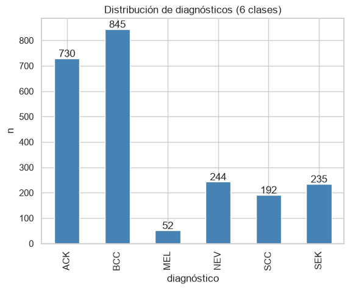
La distribución del target es el hallazgo que condiciona todo lo demás. El carcinoma basocelular tiene 845 imágenes y el melanoma 52. Esa proporción de dieciséis a uno tiene dos consecuencias inmediatas. La primera es que la accuracy queda descartada como métrica: un modelo que nunca prediga melanoma acierta el 97,7 por ciento de las veces en esa clase y parece excelente. Por eso el objetivo de optimización es el macro-F1, que promedia el F1 de cada clase dándoles el mismo peso, de modo que fallar sistemáticamente en melanoma se paga caro. La segunda consecuencia es que el entrenamiento necesita compensar el desbalance, y eso se resolvió con pesos por clase inversos a su frecuencia.
Hay un matiz que vale la pena señalar porque cambia la lectura. Vistas como malignas contra benignas, las clases están casi equilibradas: 1.089 imágenes malignas contra 1.209 benignas. El desbalance es severo dentro de cada grupo, no entre ellos. Esto explica en parte por qué, como se verá en los resultados, el sistema anda mucho mejor en la tarea binaria que en la de seis clases.
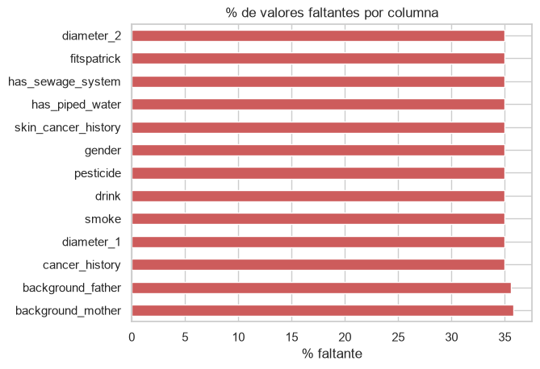
Trece columnas clínicas tienen exactamente el mismo 35 por ciento de valores faltantes. Esa coincidencia exacta no es casual, y al investigarla apareció que son siempre las mismas 804 filas las que tienen el bloque entero vacío. Dicho de otro modo, no es que a algunos pacientes les falte el diámetro y a otros el antecedente familiar: hay 804 registros a los que no se les hizo la encuesta clínica completa. La única variable que nunca falta es la edad.
Esto obligó a mirar con más cuidado, y lo que se encontró se cuenta en la sección de preprocesamiento, porque tiene consecuencias directas sobre el riesgo de leakage.
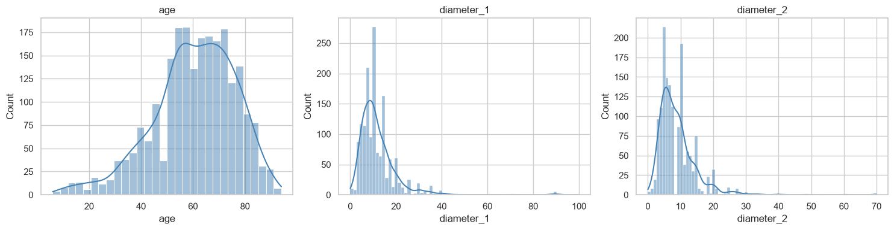
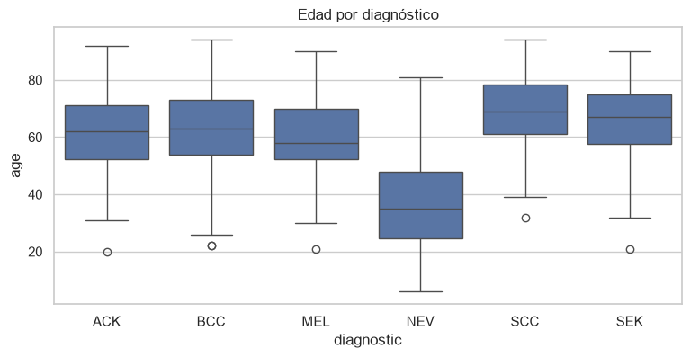
La edad resultó ser la variable clínica más informativa, algo que la explicabilidad confirmaría después. Los nevos melanocíticos aparecen en pacientes notoriamente más jóvenes y los carcinomas en los mayores, de modo que la edad sola ya empuja la decisión en una dirección. Los síntomas reportados también discriminan con fuerza: entre las lesiones benignas solo el 8 por ciento sangra, mientras que entre las malignas lo hace el 47 por ciento. Algo parecido pasa con el dolor, que aparece en el 4 por ciento de las benignas y en el 31 por ciento de las malignas. Son exactamente las señales que un médico busca al interrogar, y están en la tabla, no en la foto.
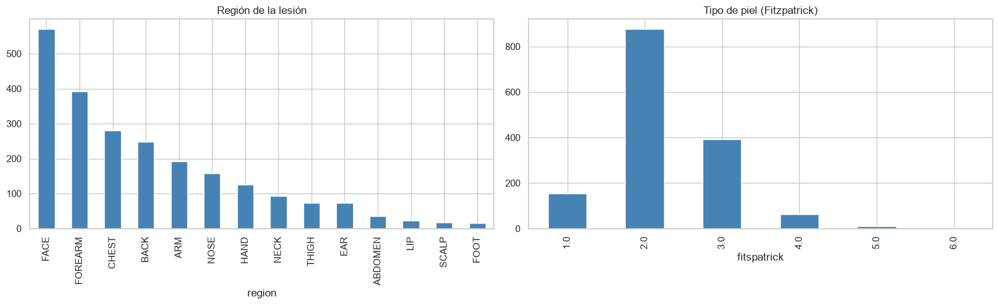
La distribución de fototipos merece un comentario porque es una limitación seria del sistema. La escala de Fitzpatrick va del I al VI, de la piel más clara a la más oscura, y en este dataset el fototipo II concentra 876 casos mientras que el V tiene 10 y el VI tiene uno solo. La población atendida por el programa desciende mayoritariamente de inmigrantes pomeranos, de piel muy clara. Un modelo entrenado acá no tiene cómo haber aprendido a reconocer lesiones en piel oscura, y desplegarlo sobre una población distinta sería un error. Volvemos sobre esto en la discusión.
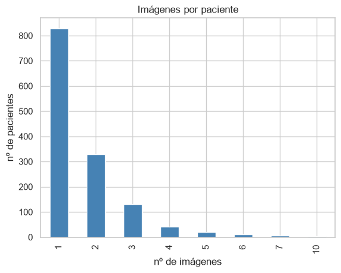
Las 2.298 imágenes provienen de solo 1.373 pacientes. Casi el 40 por ciento de los pacientes aporta más de una foto, y hay quien aporta diez. Este gráfico, que parece menor, es el que determina cómo hay que repartir los datos, y se explica en la sección siguiente.
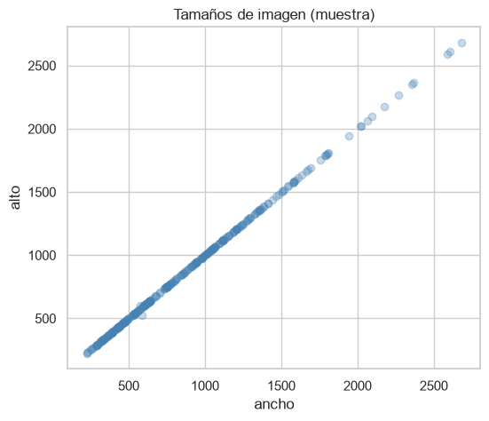
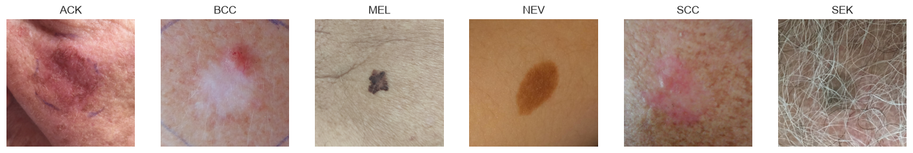
Esta última figura resume por qué el problema es difícil. Las clases se parecen mucho entre sí, sobre todo los dos carcinomas, y las fotos traen todo lo que trae una foto de consultorio: pelo, brillos, sombras, dedos, y en varios casos un círculo dibujado con birome alrededor de la lesión. Ese círculo va a reaparecer, de manera incómoda, en la sección de explicabilidad.
Acá está la decisión metodológica más importante del trabajo, y es una que no se ve en ninguna métrica pero que, de haberla tomado mal, habría invalidado todo lo demás.
Si el reparto entre entrenamiento y test se hiciera al azar sobre las imágenes, un mismo paciente caería en los dos lados. El modelo vería en el entrenamiento una foto de la lesión de un señor y en el test otra foto de la misma lesión del mismo señor, tomada minutos después desde otro ángulo. Reconocer que son la misma lesión no requiere aprender dermatología. Las métricas subirían y estarían mintiendo.
Por eso el reparto se hace agrupando por paciente, con StratifiedGroupKFold, en src/data/split.py. Cada paciente entra entero en un solo conjunto, con todas sus lesiones y todas sus fotos. Al mismo tiempo se estratifica por diagnóstico para que las proporciones de clases se mantengan parecidas en los tres conjuntos. Las dos restricciones tiran en direcciones opuestas, porque el grano mínimo indivisible pasa a ser el paciente y no la imagen, así que la estratificación es aproximada y no exacta.
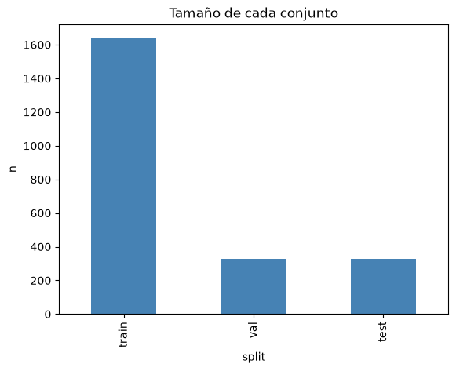
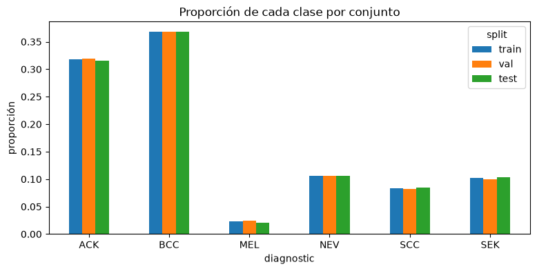
La verificación de que no hay fuga es explícita y no una promesa: la función patient_overlap cuenta cuántos identificadores de paciente aparecen en más de un conjunto, y el resultado tiene que ser cero. El notebook 02_split.ipynb corre esa comprobación con un assert, de modo que si alguna vez dejara de cumplirse, el notebook falla en lugar de seguir de largo silenciosamente.
El reparto resultante se guarda en data/splits.csv y se versiona en Git. Es un archivo liviano que solo mapea cada imagen a su conjunto, y versionarlo cumple dos funciones: cualquiera que clone el repositorio entrena y evalúa exactamente sobre la misma partición, y queda registrado a qué reparto corresponde cada métrica que se reporta. Es la parte de datos de la trazabilidad.
Hay una consecuencia de este reparto que conviene tener presente al leer los resultados. Con 52 melanomas en total, al test le tocan siete. Cualquier métrica por clase del melanoma sobre siete casos tiene una incertidumbre enorme, porque un acierto de más o de menos mueve el F1 varios puntos. Cuando en los resultados se vea que el melanoma tiene buen desempeño en test, hay que leerlo con esa reserva.
El segundo desafío que plantea la consigna es prevenir el training-serving skew, que es la diferencia silenciosa entre lo que el modelo vio al entrenar y lo que recibe en producción. Es un problema traicionero porque no falla ruidosamente: el sistema sigue devolviendo predicciones, solo que peores, y nadie se entera.
La estrategia fue estructural más que declarativa. Todo el preprocesamiento vive en src/features/, un módulo que importan tanto el entrenamiento como la API: no hay dos implementaciones que sincronizar, hay una sola. El objeto que transforma la tabla se ajusta una vez durante el entrenamiento, se guarda en models/tabular_transformer.joblib, y es ese mismo archivo, no una reconstrucción equivalente, el que carga el servicio de predicción. El refuerzo final está en el checkpoint: además de los pesos, model.pt guarda la lista ordenada de las columnas con las que se entrenó, y evaluate.py aborta si no coinciden. Sin esa guarda, regenerar el parquet con otro orden haría que las features entraran corridas y las métricas no significarían nada, pero todo seguiría corriendo sin error.
De los 26 campos se seleccionaron 21, definidos en src/features/tabular_utils.py. Cuatro son numéricas, la edad, los dos diámetros y el fototipo, y diecisiete categóricas, entre ellas el sexo, la región del cuerpo, los antecedentes y los seis síntomas. Las numéricas se imputan con la mediana y se estandarizan, las categóricas con una categoría explícita de faltante y se convierten a indicadoras. Las 21 variables terminan siendo 87 columnas. Dos detalles apuntan a producción: el codificador ignora categorías desconocidas, de modo que una región nunca vista no tira abajo la API, y la imputación agrega indicadores de faltante, que conservan la información de que el dato no estaba, algo que en una ficha clínica no es ruido.
Al investigar el bloque de 804 registros incompletos que había aparecido en el análisis exploratorio, encontramos algo que obligó a tomar una decisión. Cruzando el diagnóstico contra la presencia del diámetro se ve que entre las lesiones cuyo diámetro falta no hay ni un solo caso maligno: el basocelular, el melanoma y el espinocelular tienen cero por ciento de faltante, mientras que la queratosis actínica concentra el 55,6 por ciento de los casos con dato ausente. El faltar no es aleatorio: es casi perfectamente predictivo de que la lesión es benigna.
La explicación está en el protocolo del programa: a las lesiones sospechosas se las biopsia, y biopsiar implica medirlas y completar la ficha entera. A las que a simple vista son benignas se las registra sin ese detalle. El dato faltante no es un accidente, es una huella de la decisión del médico.
Esto tiene dos caras. Por un lado, justifica conservar los indicadores de faltante, porque llevan señal real. Por otro lado, obligó a excluir la variable biopsed, que indica si el diagnóstico está confirmado por biopsia. El basocelular, el melanoma y el espinocelular están biopsiados el cien por ciento de las veces, contra el 24 por ciento de la queratosis actínica y el 6 por ciento de la queratosis seborreica. Usar esa variable sería darle al modelo la respuesta escrita: saber que la lesión fue biopsiada es prácticamente saber que el médico ya sospechaba que era maligna. El modelo aprendería a leer la decisión del clínico en vez de aprender a mirar la lesión, y en producción esa variable no existiría, porque la predicción se hace antes de decidir si biopsiar.
Queda una tensión que no resolvimos y que es honesto declarar. Los indicadores de faltante que sí conservamos son un proxy debilitado de lo mismo que excluimos: si el diámetro falta, es probable que no se haya biopsiado, y por lo tanto que el médico la considerara benigna. Se defiende porque en producción un formulario incompleto también es información genuina y disponible al momento de predecir, pero parte de la señal que aprovecha el modelo viene del protocolo del hospital y no de la biología de la lesión. Sobre esto volvemos en la discusión.
Las imágenes se convierten a RGB y se llevan a 224 por 224 píxeles con remuestreo de Lanczos, y quedan guardadas en data/processed/images. Hacer esto una sola vez y no en cada época baja el peso de 3,4 gigabytes a 182 megabytes y evita repetir el mismo trabajo miles de veces. En producción la misma normalización se aplica sobre la imagen que sube el usuario, con las mismas constantes de ImageNet.
La arquitectura tiene dos ramas que procesan cada fuente por separado y se juntan al final, un esquema que se conoce como fusión tardía. Está definida en src/models/architectures/multimodal.py.
La rama de imagen es una EfficientNet-B2 preentrenada en ImageNet, usada como extractor de características. Preentrenar era imprescindible: con 1.640 imágenes de entrenamiento no hay ninguna posibilidad de aprender desde cero a reconocer bordes, texturas y colores. Lo que sí se aprende es a adaptar las capas finales al dominio de la piel, y para eso solo se descongelan los últimos dos bloques, más la cabeza convolucional. El resto queda fijo. Cuántos bloques descongelar terminó siendo el hiperparámetro más determinante de todos, y la sección de optimización lo muestra con números.
La rama tabular es deliberadamente simple: dos capas densas que llevan las 87 columnas a 64 características. No hace falta más, porque son 21 variables con relaciones sencillas y una red profunda sobre tan pocos datos solo agregaría sobreajuste.
La fusión concatena los dos vectores y los pasa por una cabeza con dropout antes de la decisión final. Es la manera más simple de fusionar y tiene una desventaja que la explicabilidad expuso con claridad: al concatenar 1.408 características de imagen con 64 de la tabla, la rama tabular está en enorme desventaja numérica desde el arranque. Volvemos sobre esto.
El desbalance se ataca con pesos por clase inversos a la frecuencia, calculados sobre el entrenamiento, de modo que equivocarse en un melanoma cueste unas dieciséis veces más que equivocarse en un basocelular. También se implementó focal loss como alternativa, en src/models/losses.py, y se la dejó competir dentro de la búsqueda de hiperparámetros. Perdió, y ese resultado se cuenta en la sección siguiente.
El learning rate baja a la mitad cuando la validación se estanca dos épocas, con un piso, y el entrenamiento corta cuando pasan diez épocas sin mejorar. Un detalle importante es qué se guarda: no el modelo de la última época sino el de la mejor, medido por macro-F1 en validación. Las curvas de la sección de resultados muestran por qué esto no es un tecnicismo.
El aumento de datos se aplica solo al entrenamiento e incluye espejados horizontales y verticales, rotaciones, traslaciones, zoom, variación de brillo y contraste y borrado aleatorio de un parche. Los dos espejados son legítimos acá porque una lesión de piel no tiene orientación canónica: una foto dada vuelta sigue siendo una foto válida de la misma lesión. En otros dominios, como el reconocimiento de dígitos, esa transformación destruiría la etiqueta.
La consigna pedía implementar al menos dos técnicas de optimización y, sobre todo, evaluar su impacto. Se implementaron el aumento de datos para imágenes, ya descrito, y el ajuste de hiperparámetros con Optuna, en src/models/tune.py.
La búsqueda explora catorce hiperparámetros a la vez, entre ellos el backbone, el learning rate, el dropout, cuántos bloques descongelar, las dimensiones de las tres partes de la red, el tamaño del lote, la intensidad del aumento de datos y la elección de la función de pérdida. Se corrieron cien trials en cinco horas y media, guiados por el algoritmo TPE, que aprende de los resultados anteriores en lugar de probar al azar.
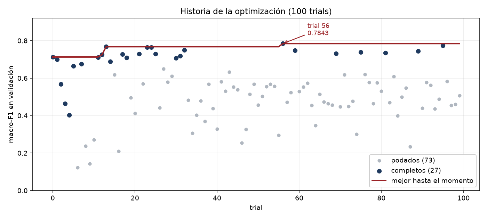
Setenta y tres de los cien trials fueron podados. El podador corta un trial en cuanto queda claro que va peor que la mediana de los anteriores a la misma altura, lo que permite no gastar el presupuesto en configuraciones malas. Sin poda, la búsqueda habría costado bastante más de las cinco horas y media que llevó, y ese ahorro es en sí mismo un resultado del que la consigna pide hablar.
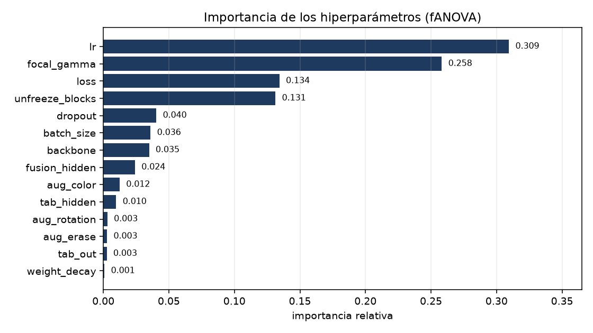
Lo más valioso de correr cien trials no fue el ganador sino lo que muestran los perdedores.
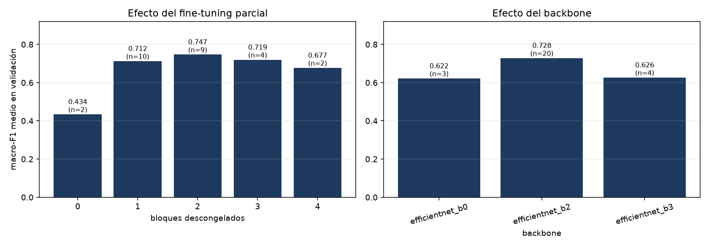
El hallazgo más contundente es el del fine-tuning parcial. Con el backbone completamente congelado, el modelo se queda en 0,434 de macro-F1 medio: las características de ImageNet, aprendidas sobre perros, autos y muebles, no alcanzan para distinguir un carcinoma de una queratosis. Descongelar un solo bloque salta a 0,712, y dos bloques llegan a 0,747, que es el óptimo. A partir de ahí empieza a bajar, porque con 1.640 imágenes descongelar más parámetros es invitar al sobreajuste. Hay una ventana, y está en dos.
El segundo hallazgo es que la focal loss no aportó. Entre los trials completos, los que usaron entropía cruzada ponderada promedian 0,731 y los que usaron focal loss promedian 0,534. Ninguno de los ocho mejores trials usa focal. La interpretación es que la focal loss está diseñada para atacar el desbalance concentrando el aprendizaje en los ejemplos difíciles, pero el peso inverso a la frecuencia ya resuelve el desbalance, y encima la focal agrega un hiperparámetro más que ajustar. Vale la pena decirlo así: la implementamos, la evaluamos y los datos dijeron que no servía en este problema. Eso es un resultado, no un fracaso.
Sobre los backbones, la búsqueda convergió a la B2, que probó sesenta y siete veces contra quince de la B0 y diez de la B3. Entre los trials completos la B2 promedia 0,728 contra 0,622 de la B0. La B3, más grande, no mejora, lo que es coherente con la escasez de datos.
Acá hay que contar algo que encontramos al preparar este informe, porque omitirlo sería deshonesto y además la historia es instructiva. Al momento de escribir, el modelo que estaba en producción era una EfficientNet-B0 con tres bloques descongelados, que venía de un estudio anterior más chico, de veinticinco trials, y alcanzaba 0,771. El estudio de cien trials, con su ganador de 0,784 y su B2, se había corrido pero sus resultados nunca se habían llevado al archivo de configuración ni al modelo final. El paso de reentrenar con los mejores hiperparámetros había quedado pendiente y el sistema estaba sirviendo un modelo peor que el mejor que la propia búsqueda había encontrado.
Se cerró el ciclo: se actualizó config.yaml con los parámetros del trial 56 y se reentrenó. El resultado tiene un valor extra, porque el reentrenamiento reprodujo exactamente el 0,7843 del trial original. Que un experimento corrido dentro de la búsqueda se reproduzca con el mismo número al volver a correrlo por separado, con la misma semilla, es evidencia directa de que la trazabilidad y el control de la aleatoriedad funcionan.
| Corrida | Configuración | Macro-F1 en validación |
|---|---|---|
| Baseline inicial | EfficientNet-B0, sin ajuste, sin aumento de datos, sin scheduler | 0,650 |
| Primer estudio | EfficientNet-B0 con 25 trials, aumento de datos y scheduler | 0,771 |
| Modelo final | EfficientNet-B2 con 100 trials, trial 56 | 0,784 |
La progresión del baseline al modelo final es de 13,4 puntos de macro-F1, y la mayor parte de esa ganancia viene del primer salto, cuando se agregaron el aumento de datos, el scheduler y un ajuste modesto. Los ochenta trials adicionales del segundo estudio compraron 1,3 puntos más. Es un rendimiento decreciente muy marcado y vale la pena reconocerlo: si el presupuesto de cómputo fuera escaso, el primer estudio de veinticinco trials habría capturado casi todo el beneficio disponible.
Sobre el impacto en la latencia, que la consigna menciona explícitamente, el cambio de B0 a B2 casi duplica el modelo, de 4,2 a 8,0 millones de parámetros, y el archivo pasa de 17 a 32 megabytes. La inferencia corre en CPU sobre una instancia modesta y la predicción de una imagen sigue estando muy por debajo del segundo, así que para este caso de uso, donde un médico sube una foto y espera un resultado, el costo es irrelevante frente a 1,3 puntos de macro-F1. Si el sistema tuviera que responder miles de pedidos por segundo, la conclusión sería la opuesta.
La trazabilidad se resolvió en los tres niveles que pide la consigna, y con dos sistemas que se complementan.
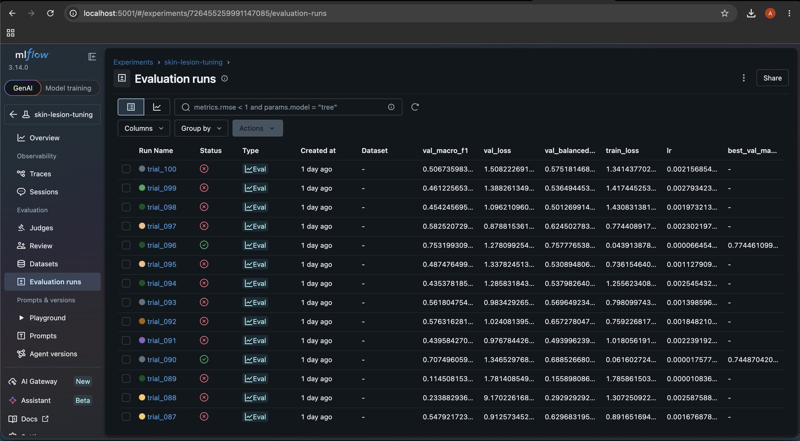
Los experimentos se registran en MLflow, con dos experimentos separados: skin-lesion para los entrenamientos y skin-lesion-tuning para la búsqueda, que suman 109 corridas. De cada una se guardan todos los hiperparámetros, las métricas época por época y el checkpoint como artefacto. La búsqueda usa corridas anidadas, de modo que los cien trials cuelgan de una corrida padre y el árbol se puede recorrer sin perderse. Entre las métricas por época se registra también el learning rate, lo que permite ver en la curva los escalones exactos donde el scheduler lo bajó.
Los modelos quedan versionados por partida doble: como artefacto de su corrida en MLflow y como archivo con el número de trial y su F1 en el nombre. El estudio de Optuna además persiste en una base SQLite propia, lo que permite reanudar una búsqueda interrumpida y regenerar cualquier gráfico sin volver a entrenar. Las figuras 12, 13 y 14 de este informe se generaron así, meses después de la búsqueda, leyendo esa base.
Los datos se versionan a través de data/splits.csv, como se explicó. Las imágenes en sí no entran a Git porque son 3,4 gigabytes, y esa es una limitación real del enfoque: la reproducibilidad depende de que el dataset original siga disponible en Mendeley. Una herramienta como DVC habría permitido versionar los datos con integridad verificable sin meterlos en el repositorio, y sería la mejora natural.
Todo lo anterior se decidió mirando el conjunto de validación. El test se mantuvo sin tocar hasta el final y se usó una sola vez, para lo que sigue. Esto importa porque la validación está quemada: se la usó cien veces para elegir hiperparámetros y otras veintitrés para elegir en qué época cortar. Un número medido sobre un conjunto que se usó para elegir está optimistamente sesgado por construcción, y la magnitud de ese sesgo es justamente lo que el test revela.
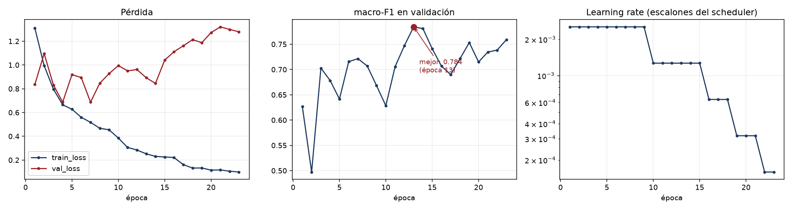
Estas curvas dicen tres cosas. La primera es que el modelo sobreajusta con claridad: la pérdida de entrenamiento cae de 1,3 a 0,10 mientras que la de validación toca fondo alrededor de la época siete y a partir de ahí sube hasta 1,28. La segunda es que el macro-F1 de validación no acompaña esa degradación de forma limpia, sino que oscila entre 0,63 y 0,78 durante veintitrés épocas, con un pico en la trece. La tercera se sigue de las dos anteriores y justifica una decisión de diseño: como el modelo que se guarda es el de la mejor época y no el de la última, el sistema conserva el de la época trece, con 0,784, en lugar del de la época veintitrés, con 0,759.
Pero ese pico de 0,784 es exactamente el problema. Elegir el máximo de veintitrés mediciones ruidosas sobre un conjunto de 329 imágenes no da el desempeño del modelo, da el desempeño de la mejor época medida sobre ese conjunto en particular. Parte de ese valor es señal y parte es suerte. El test dice cuánto de cada cosa.
| Métrica | Validación | Test | Diferencia |
|---|---|---|---|
| Macro-F1 | 0,784 | 0,690 | 9,4 puntos |
| Balanced accuracy | 0,769 | 0,703 | 6,6 puntos |
| Accuracy | 0,824 | 0,760 | 6,4 puntos |
| Recall de lesiones malignas | 0,929 | 0,942 | sube 1,3 |
El macro-F1 cae 9,4 puntos de validación a test, de 0,784 a 0,690. Esa diferencia no es un defecto del modelo sino la medida del sesgo de selección: es lo que se sobreestimaba por elegir mirando el mismo conjunto sobre el que se medía. El número honesto del sistema es 0,690.
Llamativamente, el recall de lesiones malignas no cae sino que sube levemente. Esa asimetría es la pista de qué está pasando realmente, y se entiende mirando el detalle por clase.
| Clase | Naturaleza | Precisión | Recall | F1 | Casos | AUC |
|---|---|---|---|---|---|---|
| ACK, queratosis actínica | benigna | 0,896 | 0,827 | 0,860 | 104 | 0,958 |
| BCC, carcinoma basocelular | maligna | 0,771 | 0,835 | 0,802 | 121 | 0,931 |
| MEL, melanoma | maligna | 0,667 | 0,857 | 0,750 | 7 | 0,985 |
| NEV, nevo melanocítico | benigna | 0,730 | 0,771 | 0,750 | 35 | 0,970 |
| SCC, carcinoma espinocelular | maligna | 0,269 | 0,250 | 0,259 | 28 | 0,793 |
| SEK, queratosis seborreica | benigna | 0,767 | 0,676 | 0,719 | 34 | 0,951 |
El carcinoma espinocelular es el agujero del modelo. Con un F1 de 0,259 sobre veintiocho casos, es la única clase que anda mal de verdad, y como el macro-F1 promedia las seis clases con el mismo peso, esa sola clase arrastra el promedio hacia abajo. Si se la excluyera, el macro-F1 de las otras cinco sería 0,776. El melanoma, en cambio, obtiene un F1 de 0,750 y un AUC de 0,985, pero sobre siete casos: un solo error de más lo derrumbaría, así que ese número no se puede tomar como evidencia sólida de que el sistema detecta melanomas bien.
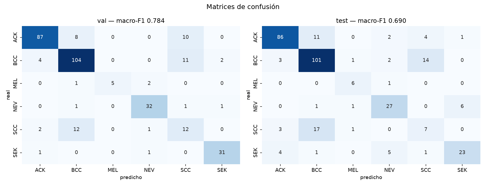
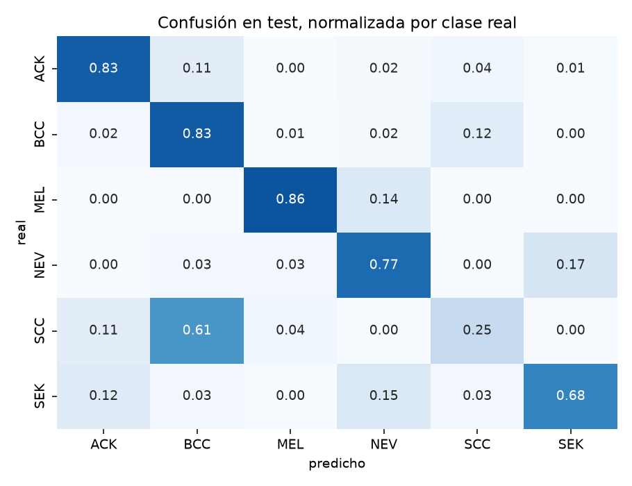
La matriz de confusión resuelve el enigma. De los veintiocho carcinomas espinocelulares del test, diecisiete se predicen como basocelulares. El modelo no está diciendo que esas lesiones son benignas: está diciendo que son el otro carcinoma. Ambos son cánceres de piel de origen queratinocítico, se parecen mucho, y en la práctica clínica los dos terminan en el mismo lugar, que es la consulta con un especialista y probablemente la extirpación. Es un error, pero es el error menos grave que el modelo podía cometer sobre esas lesiones.
Esto lleva a evaluar el sistema desde la vista clínica, agrupando las tres clases malignas contra las tres benignas.
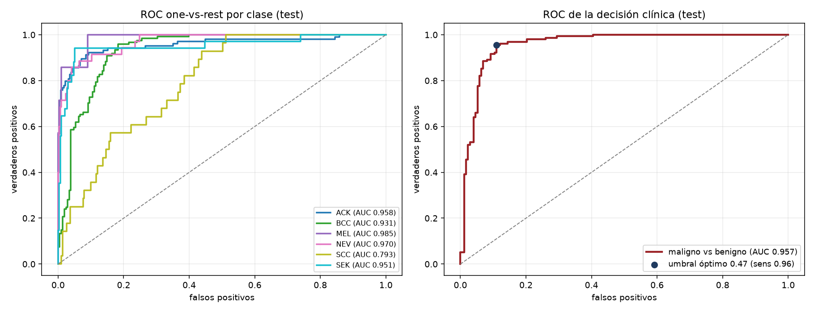
| Predicho benigno | Predicho maligno | |
|---|---|---|
| Realmente benigno | 154 | 19 |
| Realmente maligno | 9 | 147 |
Sobre el test, el sistema detecta 147 de las 156 lesiones malignas, un recall del 94,2 por ciento, con una precisión del 88,6 por ciento y un AUC de 0,957. Se le escapan nueve lesiones malignas, y esos nueve casos son el costo real del sistema: son cánceres que un triage automático mandaría a casa. Los diecinueve falsos positivos, en cambio, cuestan una consulta innecesaria, que es un precio mucho más barato.
La curva ROC de la derecha muestra además algo útil para desplegar esto de verdad. El punto marcado es el umbral que maximiza el índice de Youden, y está en 0,47, muy cerca del 0,5 por defecto, alcanzando una sensibilidad del 95,5 por ciento. Pero un sistema de triage real no debería usar ese umbral: debería moverlo hacia abajo para elevar la sensibilidad al 98 o 99 por ciento, aceptando muchos más falsos positivos. La forma de la curva permite hacer esa cuenta, y esa es justamente la ventaja de reportar la ROC en lugar de una sola métrica a umbral fijo.
Los dos números conviven sin contradicción. El sistema es mediocre distinguiendo cuál de los seis diagnósticos es, sobre todo entre los dos carcinomas, y es bueno en la pregunta que motiva el proyecto, que es si la lesión necesita ver a un especialista.
Un sistema que sugiere que una lesión puede ser cáncer no puede ser una caja negra. Como el modelo tiene dos ramas que procesan cosas distintas, hacen falta dos técnicas distintas, implementadas en src/models/explain.py.
Grad-CAM produce un mapa de calor que señala qué zonas de la imagen pesaron en la decisión. Se toma la última capa convolucional, donde la red todavía conserva dónde estaba cada cosa, y se ponderan sus canales por el gradiente del logit de la clase predicha. Dos decisiones de implementación importan. El backward se hace sobre el logit del modelo completo y no de la rama de imagen aislada, así que el mapa refleja la predicción multimodal real. Y como el backbone está congelado, PyTorch no construye el grafo de gradientes y el mapa saldría plano sin lanzar ningún error, un fallo silencioso de los peores, que se evita forzando que el tensor de entrada requiera gradiente.
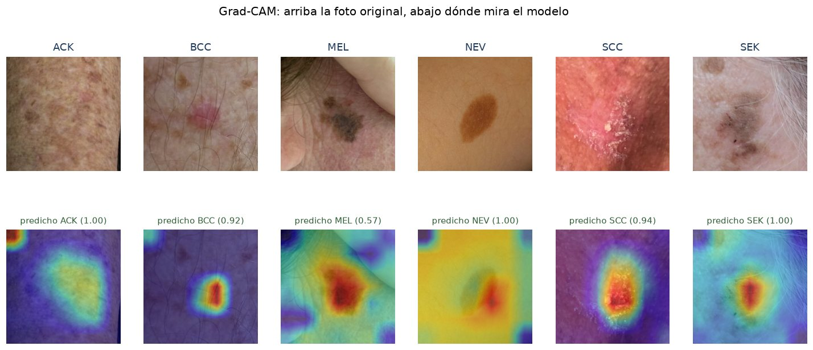
En los casos que el modelo acierta, el mapa se comporta como uno querría. El foco cae sobre la lesión y no sobre el fondo, con precisión notable en el basocelular, el espinocelular y la queratosis seborreica. El nevo es el caso menos convincente del grupo: el mapa se reparte entre la lesión y la piel de alrededor, aunque la predicción sea correcta con una confianza de 1,00.
Conviene recordar una limitación de la técnica. El mapa nace de una grilla de siete por siete, o sea cuarenta y nueve casilleros, que se estira a 224 por 224 píxeles. Por eso se ve borroso, y por eso solo se puede afirmar que el modelo miró por esa zona, nunca que miró ese píxel.
Los errores son más informativos que los aciertos, y acá lo fueron.
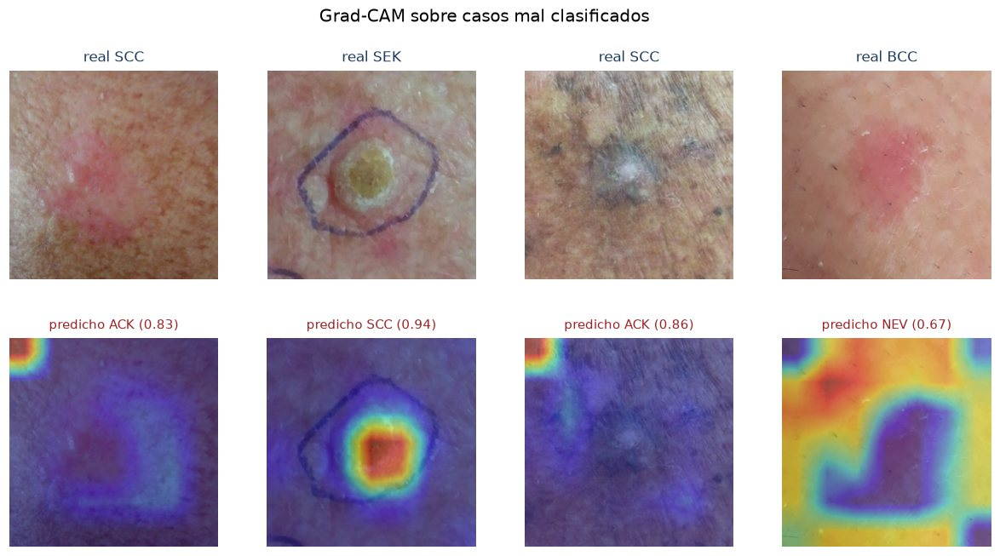
Los dos primeros casos son espinocelulares predichos como queratosis actínica, y el mapa es difuso y débil: el modelo no encuentra dónde agarrarse. Es coherente con el mal desempeño en esa clase.
El cuarto caso es el más grave. Es un carcinoma basocelular predicho como nevo, y el mapa está invertido: la zona roja cubre la piel de alrededor mientras que la lesión, bien visible en el centro de la foto, queda apagada. El modelo decidió mirando cualquier cosa menos la lesión. Es un error de atención, no de criterio, y en un caso maligno.
El segundo caso merece un párrafo aparte porque señala un riesgo que excede a este ejemplo. Es una queratosis seborreica rodeada por un círculo dibujado con birome, predicha como espinocelular con 0,94 de confianza. El mapa cae sobre la lesión, así que no se puede afirmar que el modelo esté leyendo la marca. Pero varias fotos del dataset tienen esas marcas, y las hace el clínico justamente sobre las lesiones que le preocupan. Es una correlación espuria disponible: un modelo podría aprender que birome significa sospechoso, lo cual funcionaría de maravilla en el test y se derrumbaría en producción, donde las fotos las saca un paciente sin birome. No encontramos evidencia de que este modelo lo haga, pero tampoco lo descartamos, y verificarlo con una prueba dedicada es de las cosas que haríamos con más tiempo.
Para la rama tabular se usó SHAP con KernelExplainer, que perturba las variables y mide cómo cambia la salida. Se tomaron dos decisiones de implementación. La primera es de eficiencia: el embedding de la imagen es constante para una foto dada, así que se lo calcula una vez y se lo reusa, y cada evaluación solo recorre la rama tabular y la cabeza de fusión, en lugar de atravesar la red convolucional miles de veces. La segunda es de interpretación: como las 21 variables se convierten en 87 columnas, las contribuciones de las columnas que salen de una misma variable se suman de vuelta, lo que es válido porque SHAP es aditivo. Así se habla de la edad y no de nueve columnas indicadoras.
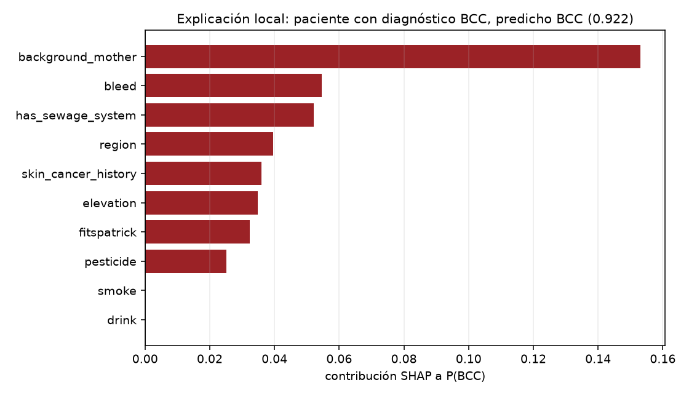
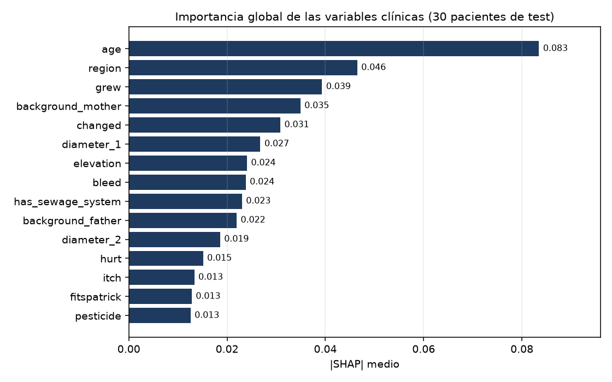
La edad domina, con una magnitud media de 0,083, casi el doble que la región del cuerpo. Después aparecen si la lesión creció, los antecedentes familiares, si cambió y el diámetro. Es un ranking clínicamente sensato: son las variables que un dermatólogo pondera al interrogar, y el modelo llegó a ellas solo. Que la explicabilidad devuelva algo que coincide con el conocimiento del dominio es una señal de que el modelo no está aprendiendo cualquier cosa.
La variable clínica más importante mueve la probabilidad 0,083 en promedio. El modelo predice con confianzas de 0,92 y 1,00. La aritmética es simple: las variables clínicas no están decidiendo casi nada. La imagen domina la decisión de manera abrumadora.
Esto pone en cuestión la hipótesis con la que arrancó el trabajo. La sección 2 argumentaba que la ficha clínica debía aportar información que no está en los píxeles, y el análisis exploratorio parecía respaldarlo: el sangrado discrimina seis a uno entre benigno y maligno. Sin embargo, la rama tabular termina siendo casi decorativa.
La explicación más plausible está en la arquitectura, y ya se insinuó al describirla. La fusión concatena 1.408 características de imagen con 64 de la tabla, una proporción de veintidós a uno. La cabeza de fusión recibe un vector donde lo tabular es una minoría diminuta, y durante el entrenamiento el camino más corto para bajar la pérdida pasa por la imagen. La rama tabular nunca recibe la presión necesaria para volverse importante. No es que la información clínica no sirva, es que esta arquitectura no la deja competir.
Se puede leer de otra manera, menos cómoda pero igual de válida: si la tabla no aporta, el multimodal no se justifica y un modelo de imagen sola daría prácticamente lo mismo con la mitad de complejidad. El experimento que zanjaría la discusión es directo, entrenar los tres modelos, imagen sola, tabla sola y multimodal, y comparar. No llegamos a correrlo, y es la primera cosa que haríamos con más tiempo. Que la explicabilidad haya servido para cuestionar una decisión de diseño, y no solo para producir figuras lindas, es probablemente el resultado más valioso de esta sección.
El modelo se expone con FastAPI, en src/api/main.py, con los dos modos que pedía la consigna. El endpoint /predict resuelve la predicción online: recibe una imagen y la ficha clínica en formato JSON, y devuelve el diagnóstico más probable junto con la probabilidad de cada una de las seis clases. El endpoint /predict/batch hace lo mismo sobre una lista de imágenes con sus fichas, apareadas por posición. Hay además un /health, que usa el healthcheck de Docker, y un /features que devuelve los nombres de las 21 variables esperadas, de modo que la API documenta su propio contrato.
| Método y ruta | Qué hace |
|---|---|
POST /predict | Predicción online. Recibe una imagen y la ficha clínica, devuelve el diagnóstico y las seis probabilidades. |
POST /predict/batch | Predicción batch. Recibe una lista de imágenes con sus fichas y devuelve un resultado por cada una. |
GET /features | Devuelve los nombres de las 21 variables clínicas que espera el modelo. |
GET /health | Estado del servicio. Lo consulta el healthcheck de Docker y la interfaz. |
El contrato se ve mejor con un pedido real. Enviando una imagen del conjunto de test junto con una ficha parcial, de la que solo se completaron tres de las veintiún variables, el servicio responde con la distribución completa sobre las seis clases:
curl -X POST http://localhost:8000/predict \
-F "file=@PAT_1516_1765_530.png" \
-F 'data={"age": 8, "region": "ARM", "itch": "True"}'
{"prediccion": "NEV",
"probabilidades": {"ACK": 0.00003, "BCC": 0.0000004, "MEL": 0.0000017,
"NEV": 0.99692, "SCC": 0.00000003, "SEK": 0.00305}}
Ese ejemplo muestra las dos decisiones que apuntan a que el servicio aguante el mundo real. La primera es la tolerancia del contrato: se mandaron tres variables de veintiuna y la API respondió igual, porque normaliza la ficha contra las esperadas, rellenando con nulos las que faltan e ignorando las que sobran, y el resto lo resuelven el imputador y el codificador que ignora categorías desconocidas. Un pedido con la ficha incompleta es exactamente lo que va a pasar en producción. La segunda es que el modelo se carga de forma perezosa, en el primer pedido, y si los artefactos no están la API responde 503 diciendo qué falta, en lugar de morir al arrancar.
La contracara, que es justo señalar, es que la ficha se recibe como texto JSON y se parsea a mano, sin un modelo de Pydantic, así que el esquema clínico no queda declarado y un cliente tiene que consultar /features para saber qué mandar. Definirlo sería una mejora barata y clara. Tampoco hay límite a la cantidad de imágenes que acepta el endpoint batch, lo que es un riesgo evidente si el servicio quedara expuesto.
La interfaz está hecha con Streamlit y no busca parecer una demo sino un sistema de apoyo diagnóstico. Toda está en español clínico, con los códigos traducidos a sus nombres, y lleva un aviso permanente de que es una herramienta académica que no reemplaza el juicio profesional.
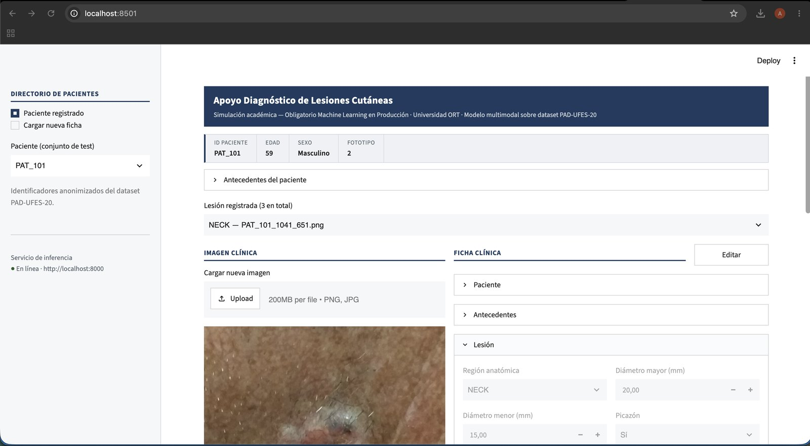
El flujo imita el de una consulta. Se elige el paciente, se revisa su ficha organizada en tres grupos, paciente, antecedentes y lesión, y se analiza. Los casos del dataset se muestran bloqueados en modo lectura, con un botón para editarlos, mientras que las fichas nuevas nacen editables, lo que evita modificar sin querer un caso registrado y creer que el modelo cambió de opinión solo.
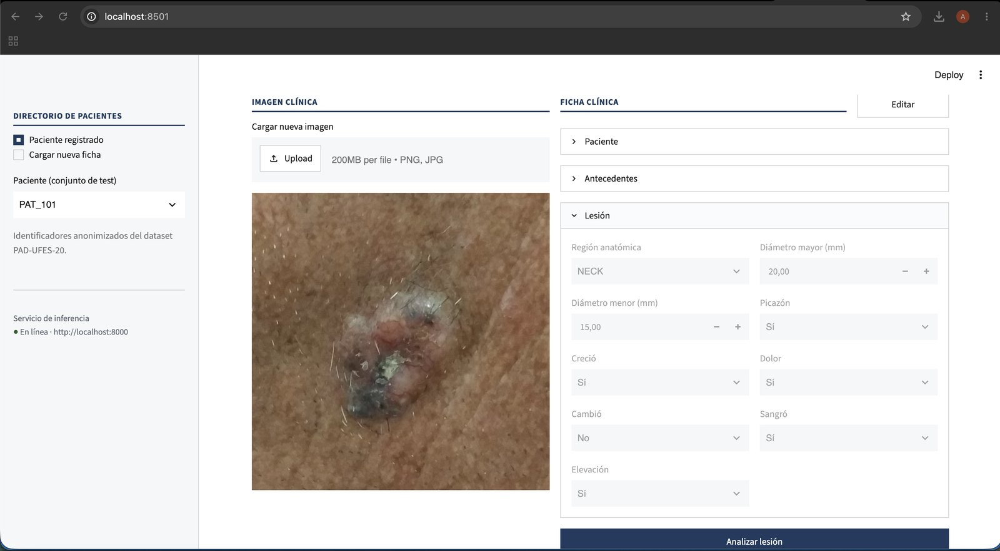
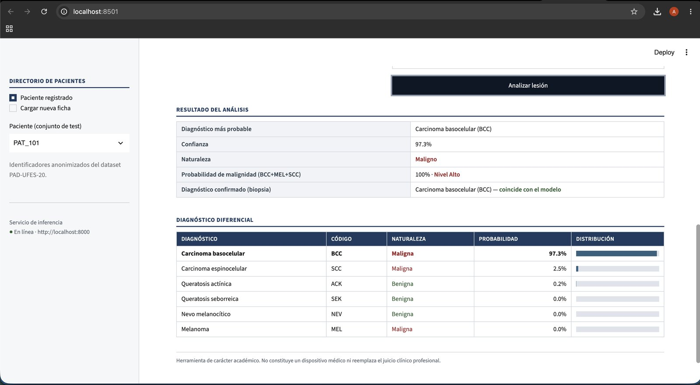
La lectura no se agota en el diagnóstico más probable. La probabilidad de malignidad es la suma de las tres clases malignas, que es la cifra correspondiente a la decisión clínica discutida en los resultados, y se traduce a un nivel de riesgo. El diferencial completo importa porque un sistema que solo dijera basocelular escondería que el espinocelular quedó segundo, y esas dos clases son justamente las que el modelo confunde: mostrar la distribución entera le permite al médico ver la duda del modelo en lugar de recibir una sentencia. El diagnóstico confirmado por biopsia que aparece abajo es una funcionalidad para mostrar el sistema, no para producción, donde ese dato no existiría al momento de predecir.
El sistema corre en dos contenedores sobre una instancia EC2 t3.medium con Amazon Linux 2023, en la región de Virginia. La elección de EC2 sobre alternativas más elegantes como Fargate o Elastic Beanstalk no fue por preferencia sino por una restricción concreta del AWS Academy Learner Lab: no permite crear roles de IAM, y solo existe un rol predefinido. Eso descarta esos servicios, que necesitan roles propios. EC2 es el camino que quedaba, y tiene la ventaja de reaprovechar los mismos contenedores del repositorio sin cambios.
La configuración de producción se endurece respecto de la de desarrollo en tres puntos. Solo se publica el puerto de la interfaz, y la API queda accesible únicamente desde la red interna de Docker, lo que reduce la superficie expuesta. Los contenedores se reinician solos, algo necesario porque la instancia se detiene al cerrarse la sesión del lab. Y la interfaz espera a que la API pase su healthcheck antes de arrancar, en lugar de confiar en el orden.
El detalle del que estamos más conformes es la imagen de la API. La versión de PyTorch que se instala por defecto trae todo el soporte de GPU y produce una imagen de unos 7 gigabytes. Como la inferencia acá corre en CPU, porque el Learner Lab no da GPU y una EfficientNet-B2 sobre CPU responde de sobra para este caso, se instala la variante de PyTorch compilada solo para CPU. La imagen baja a unos 2 gigabytes. Sobre una instancia con 30 gigabytes de disco y una conexión que hay que esperar, esa diferencia es la que separa un despliegue viable de uno que no entra.
Las dependencias están separadas en capas, con un archivo base y tres que lo extienden para producción, interfaz y desarrollo. Esta separación no es cosmética: gracias a ella MLflow, Optuna y SHAP, que pesan mucho, no entran a la imagen de serving, porque el servicio no los necesita. Hay dos restos que conviene limpiar: lightgbm figura entre las dependencias de producción sin que nadie lo importe, y plotly entre las de la interfaz, que usa tablas HTML.
informe/img/aws_ec2.pngEl reparto agrupado por paciente es la decisión de la que estamos más seguros. No mejora ninguna métrica, de hecho las empeora respecto de lo que habría reportado un reparto aleatorio, y esa es exactamente la cuestión: las métricas de este informe son creíbles porque el reparto es correcto. Un trabajo con un reparto al azar habría mostrado números más lindos y sin valor.
La paridad entre entrenamiento y producción, resuelta compartiendo el módulo de transformaciones y el artefacto ajustado, es la otra decisión estructural que sostiene el resto. Y la búsqueda de hiperparámetros dejó conocimiento además de un ganador: saber que hay que descongelar dos bloques y que la focal loss no aporta acá es más transferible que el valor del learning rate óptimo.
La más seria es la del fototipo. El dataset es abrumadoramente de piel clara, con un solo caso de fototipo VI. El sistema no tiene cómo funcionar sobre piel oscura y desplegarlo sobre otra población sería irresponsable. No se arregla con más entrenamiento sino con más datos de la población objetivo: es una limitación del dataset, no del modelo.
La segunda es el carcinoma espinocelular, con su F1 de 0,259, probablemente por combinar pocos ejemplos, 137 en entrenamiento, con un enorme parecido visual al basocelular, que tiene cuatro veces más. El atenuante es que el error se queda dentro de la categoría maligna, pero un sistema que pretendiera diagnosticar y no solo triar necesitaría resolverlo. La tercera es de tamaño muestral: con siete melanomas en el test, las métricas de la clase clínicamente más importante son casi anecdóticas, y una validación cruzada agrupada por paciente daría intervalos de confianza en vez de números sueltos.
La cuarta es una decisión que quedó a medias. Todas las imágenes se procesan a 224 por 224 píxeles, la resolución nativa de la B0, pero la búsqueda comparó también la B1, la B2 y la B3, cuyas resoluciones nativas son 240, 260 y 300. Es decir que comparó backbones fuera de la resolución para la que fueron diseñados, y la B2 ganó igual. Es plausible que a 260 rindiera mejor, y que la B3 no haya perdido por grande sino por estar más lejos de su resolución. Eso invalida parcialmente la conclusión sobre backbones.
La quinta ya se discutió: la rama tabular casi no participa de la decisión, y no sabemos si es que la información clínica no aporta o que la arquitectura no la deja aportar. Queda además la tensión de los indicadores de faltante: excluimos biopsed por leakage pero conservamos indicadores que son un proxy debilitado de lo mismo. Es defendible porque en producción ese dato existe al momento de predecir, pero parte de lo que el modelo aprovecha viene del protocolo del hospital y no de la lesión, y en un centro con otro protocolo esa señal podría desaparecer.
En orden de valor, lo primero es correr los tres modelos por separado, imagen sola, tabla sola y fusión, para saber si el multimodal se justifica: es barato y responde la pregunta que la explicabilidad dejó abierta. Lo segundo es reequilibrar la fusión, proyectando las características de imagen a una dimensión comparable a la de la tabla antes de concatenar, o usando atención en lugar de una concatenación cruda. Lo tercero es atacar el espinocelular con sobremuestreo o con un clasificador de segunda etapa dedicado a separar los dos carcinomas. Lo cuarto es probar la B2 a su resolución nativa de 260.
En el plano de producción, versionar los datos con DVC, agregar un modelo de Pydantic para la ficha clínica, poner límites al endpoint batch y, sobre todo, monitorear la deriva: un sistema como este se degrada callado si cambia la cámara, la iluminación o la población, y hoy no hay nada que lo detecte.
Siguiendo lo que pide la consigna, declaramos el uso de herramientas de inteligencia artificial generativa durante el trabajo.
Se utilizó Claude, de Anthropic, en dos contextos. El primero fue de apoyo a la programación, para consultas puntuales sobre el uso de bibliotecas, en la revisión de código y en la redacción de partes de los scripts auxiliares. El segundo fue en la elaboración de este informe, tanto en la organización de sus secciones como en la redacción, y en la generación de las figuras de resultados y de los diagramas.
Todo el contenido producido con asistencia de estas herramientas fue revisado y verificado por los integrantes del equipo. Las decisiones de diseño del sistema, la interpretación de los resultados y las conclusiones son propias. Todas las cifras que aparecen en este informe se generaron ejecutando el código del repositorio y se pueden reproducir desde él; ninguna fue tomada de una salida de la herramienta sin verificación. Los errores que puedan quedar son responsabilidad nuestra.
Repositorio: github.com/alee1526/obligatorio_MLPROD_DiazRevetria
Dataset: Pacheco, A. G. C. et al. PAD-UFES-20: a skin lesion dataset composed of patient data and clinical images collected from smartphones. Data in Brief, 2020. data.mendeley.com/datasets/zr7vgbcyr2/1
Las métricas de este informe corresponden al modelo registrado en MLflow y a la partición de datos versionada en data/splits.csv. Todas las figuras se generaron ejecutando el código del repositorio.